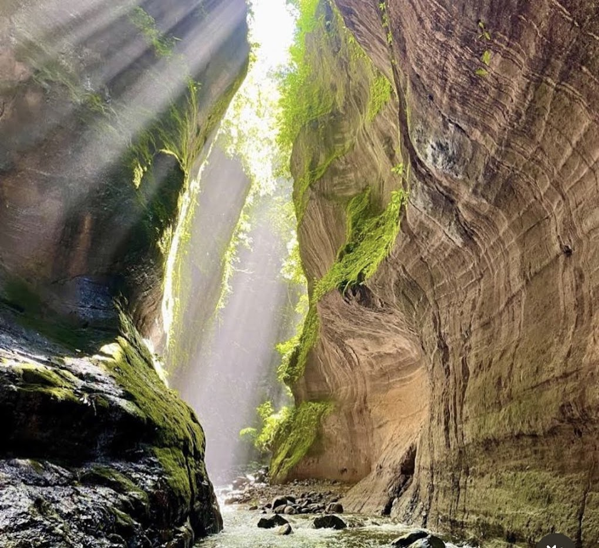
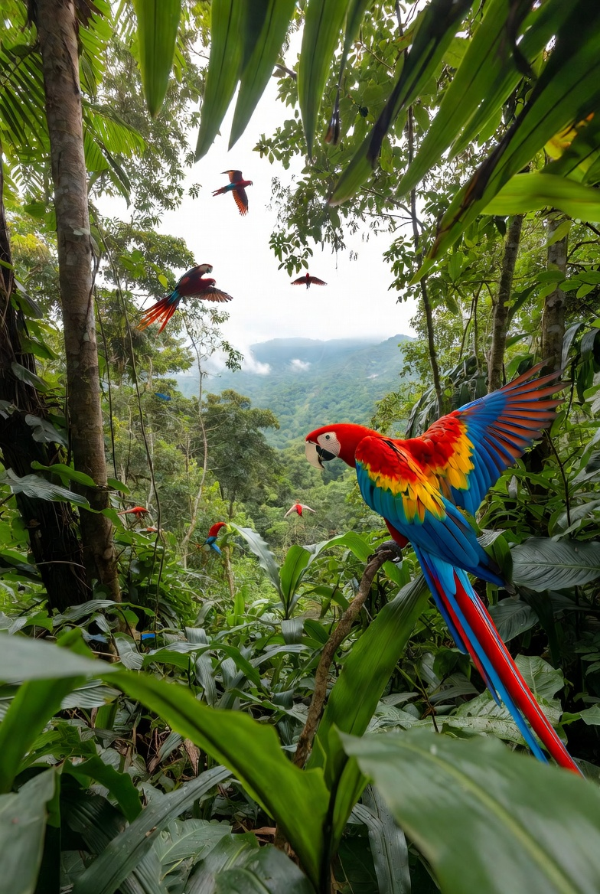
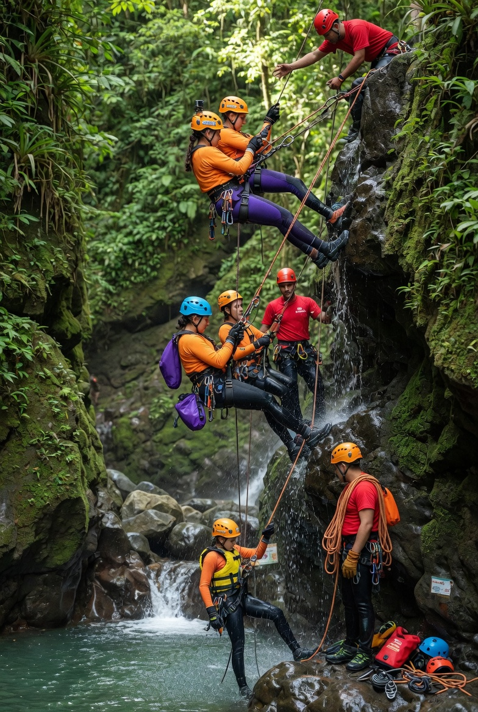
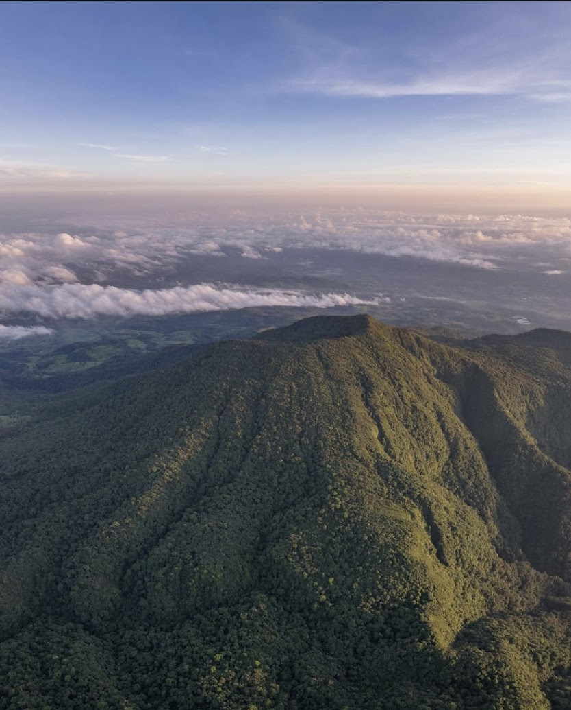
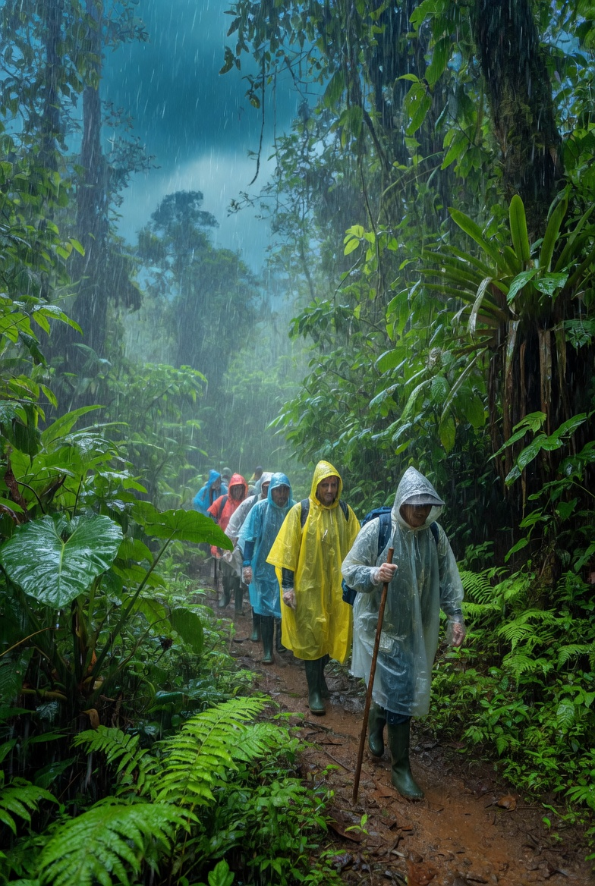
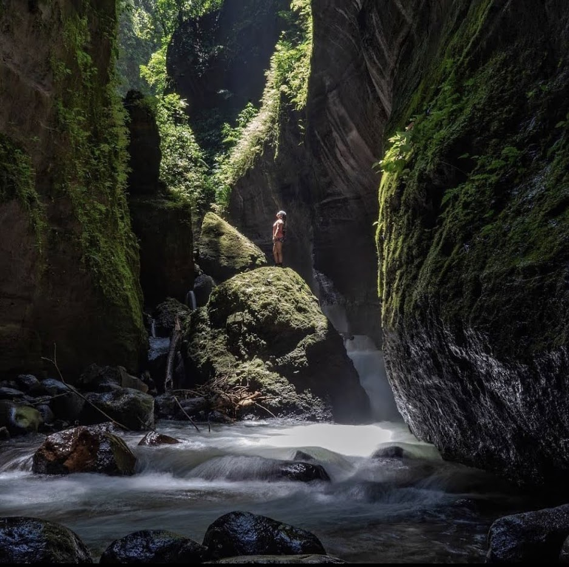
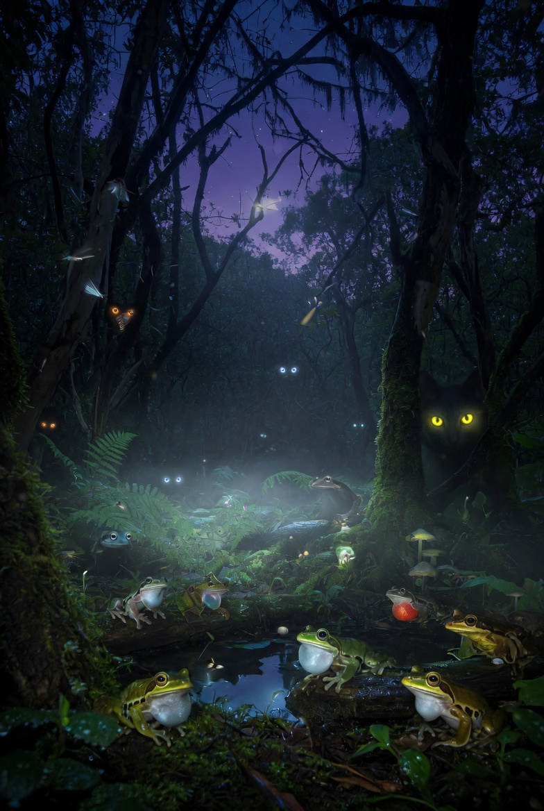
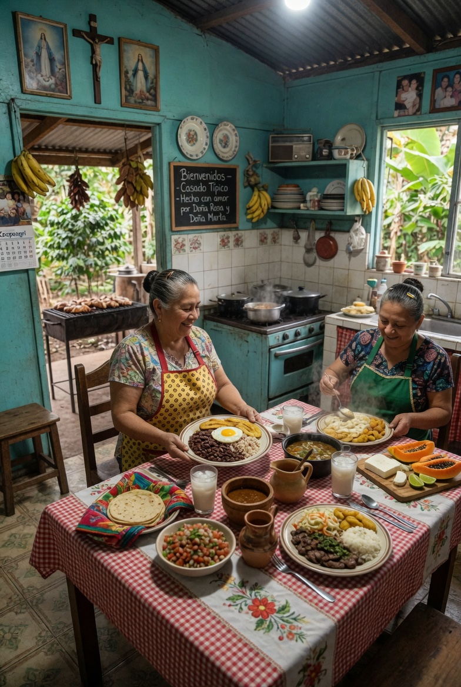
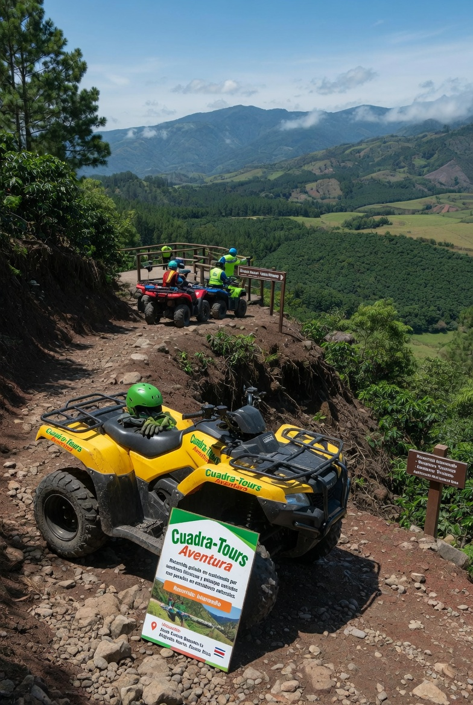

Fácil
Avistamiento de Aves Norteño
Observación con binoculares, interpretación y lista de especies. Plus $65 y privado $92.
$45₡24.990Neto $38.25
Un portafolio de aventura, bosque, fauna, cultura y gastronomía para agencias, hoteles, empresas y grupos que buscan experiencias auténticas en San Carlos y Juan Castro Blanco.

Ciudad Esmeralda · Cañón y pozas
Aves y bosque nuboso
Aventura y rapelDesde caminatas fáciles y observación de fauna hasta cañón, cuatrimotos y rapel. La ruta y los horarios se coordinan según disponibilidad, logística y condiciones climáticas.
Tarifas publicadas por La Vieja Adventures. La tarifa neta requiere convenio y confirmación escrita.
| Experiencia | Nivel | Duración | Ubicación | Público | Neto USD |
|---|---|---|---|---|---|
| Avistamiento de Aves Norteño | Fácil | 2 h | Juan Castro Blanco | ₡24.990 · $45 | $38.25 |
| Caminata a Volcanes Dormidos | Moderado | 3-4 h | Parque Nacional del Agua | ₡34.990 · $67 | $56.95 |
| Tour Ciudad Esmeralda | Moderado | 3-4 h | Sucre, San Carlos | ₡21.000 · $40 | $34.00 |
| Lluvia en la Naturaleza | Fácil | 1 h | Sucre, San Carlos | ₡19.990 · $39 | $33.15 |
| Cascadas Secretas del Río La Vieja | Moderado | 2-3 h | Sucre, San Carlos | ₡21.000 · $40 | $34.00 |
| Tour Nocturno La Vieja Adventures | Fácil | 1,5 h | Sucre, San Carlos | ₡22.000 · $42 | $35.70 |
| Tour Gastronómico Local | Fácil | 1,5 h | Sucre, San Carlos | ₡26.000 · $50 | $42.50 |
| Cuadra-Tours Aventura | Intermedio | 1,5-2 h | Juan Castro Blanco | ₡43.990 · $85 | $72.25 |
| Rapel en Cañón del Río | Intermedio-avanzado | 2 h | Sucre, San Carlos | ₡51.990 · $95 | $80.75 |
Observación con binoculares, interpretación y lista de especies. Plus $65 y privado $92.

ModeradoCráteres y miradores con guía, equipo, ingreso y briefing de seguridad.
Cañón, paredes de roca, pozas cristalinas y Cascada El Zafiro.

FácilCaminata sensorial por bosque tropical con equipo impermeable especial.

ModeradoCascadas, pozas, fotografía y baño según condiciones del río.

FácilBosque de noche, sonidos misteriosos, ojos brillantes y fauna nocturna.

FácilRecetas costarricenses, sabores regionales e historias de familias locales.

IntermedioCuatrimotos por senderos, bosque, fincas, ríos y vistas de montaña.
Descenso con equipo profesional y guías certificados por el cañón.